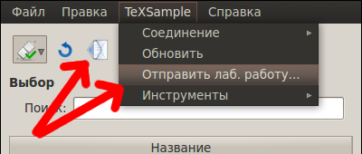
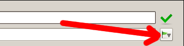

[Назад: 2. Администрирование и модерация]
[Далее: 2.2. Редактирование и удаление лабораторных работ]
Отправка лабораторных работ
Чтобы добавить лабораторную работу (отправить ее на сервер), необходимо иметь уровень доступа не ниже модератора.
Отправка лабораторной работы - процесс достаточно простой, но ответственный: нужно правильно выбрать отправляемые файлы
и добавить хорошее описание, а также снабдить работу как можно более обширным набором меток (ключевых слов), чтобы в
дальнейшем пользователям (студентам) проще было ее найти.
Подготовка
Если отправляемая работа представляет собой ссылку на внешний ресурс (сайт), то этот пункт можно пропустить. Если же
лабораторная работа является десктопным приложением или веб-приложением, то для начала необходимо поместить все файлы
работы в одну папку. Посторонних файлов в этой папке быть не должно. Пример показан ниже на рисунке:


В данном примере лабораторная работа является веб-приложением, состоящим из трех файлов, которые находятся в папке
"lab_2". Главный файл здесь - "index.html", он выделен на рисунке. Главный файл - это тот файл,
который при загрузке лабораторной работы будет первым показан в браузере либо запущен (в зависимости от типа
приложения).
Начало
Чтобы приступить к оформлению лабораторной работы, необходимо открыть диалог отправки. Сделать это можно двумя
способами, как показано на рисунке:

Нажимте кнопку с изображением конверта, либо выберите пункт "Отправить лаб. работу" меню "CloudLab"
(показаны красными стрелками).
Заполнение формы отправки
В появившейся форме отправки (см. ниже на рисунке) для начала укажите название название работы. Всегда старайтесь
придумать как можно более понятное название.

Укажите также теги (метки, ключевые слова), по которым будет легко найти вашу лабораторную работу. Теги указываются
через запятую (можно также ставить после запятой пробел). Теги, использованные при отправке предыдущей работы, можно
быстро вставить снова, воспользовавшись кнопкой с изображением зеленого крестика (показана красной стрелкой на рисунке
ниже).

Не забудьте выбрать правильный тип работы. Пример показан на рисунке:

Если автором лабораторной работы является другой человек (или люди), перечислите их в соответствующем списке (см.
рисунок ниже). Чтобы добавить нового автора, дважды щелкните на выделенной пустой строке списка. После ввода имени
автора нажмите Enter. Можно перемещать имена авторов вверх или вниз по списку, удалять выбранного автора и очищать
список авторов при помощи соотвтетсвующих кнопок справа от списка. Авторов, чьи имена были введены при отправке
предыдущих работ, можно добавить, воспользовавшись кнопкой с изображением зеленого крестика.

Опишите вашу лаобраторную работу, воспользовавшись полем "Комментарий". Здесь также можно указать имеющиеся
проблемы и недочеты, а также добавить какие-либо указания.
Не забудьте выбрать, для каких групп пользователей будет доступна ваша работа. Добавление групп аналогично добавлению
авторов. Пример показан на рисунке ниже. Помните, что новые группы (которых нет в списке, раскрывающемся при нажатии
кнопки с изображением зеленого крестика) может добавлять только администратор. См. также:
управление группами.

Наконец, нужно выбрать, что отправлять. Нажмите кнопку "Обзор..." (см. рисунок ниже), перейдите в папку с
вашей лабораторной работой и выберите главный файл (для десктопных приложений это обычно файл с расширением
".exe", а для веб-приложений - файл с именем "index.html"). Если ваша лабораторная работа доступна
для нескольких операционных систем, воспользуйтесь соотвтетствующими кнопками "Обзор..." для каждой ОС.
Наконец, если ваша работа представляет собой ссылку на внешний ресурс, просто укажите эту ссылку (например,
"my.site.com/labs/lab_2.html").

Убедитесь, что правильно заполнили информацию о лабораторной работе и выбрали нужные файлы, после чего нажмите кнопку
"ОК" (показана красной стрелкой на рисунке выше).
[Назад: 2. Администрирование и модерация]
[Далее: 2.2. Редактирование и удаление лабораторных работ]